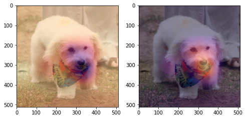
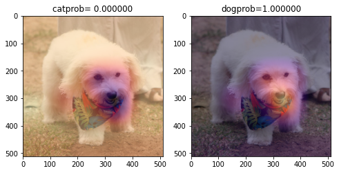

import torch
import torchvision
from fastai.vision.all import * transfer learning + explainable artificial inteligence(CAM)
- toc:true
transfer learning
- 누군가가 만들어 놓은 모델의 구조를 사용하는 것
- fine_tune을 사용하면 전이학습이 되어 학습시간이 줄어들음
- lrnr.fit을 사용하면 그냥 학습을 시키는 것
데이터 준비
path = untar_data(URLs.CIFAR)path.ls() # path에는 labels라는 텍스트 파일과 test,train이라는 폴더가 있음(#3) [Path('/root/.fastai/data/cifar10/labels.txt'),Path('/root/.fastai/data/cifar10/test'),Path('/root/.fastai/data/cifar10/train')]!ls /root/.fastai/data/cifar10/trainairplane automobile bird cat deer dog frog horse ship trucktrain 폴더 안에는 위위와 같은 폴더들이 있음
각 폴더에는 이름과 맞는 이미지 파일이 있음
10개의 클래스
앞 장에서 만든 CNN Architecture를 사용하면 정확도가 매우 떨어짐
- 학습과정은 패스했음
더 복잡하고 정교한 모델을 만들어야 함 \(\to\) transfer learning 사용
모델 만들기
- ResNet의 weights를 그대로 가져와 학습에 사용
모델 가져오는 방법 1
dls = ImageDataLoaders.from_folder(path,train='train',valid='test')_x, _y = dls.one_batch()
_x.shape, _y.shape(torch.Size([64, 3, 32, 32]), torch.Size([64]))- x의 배치크기는 64(= 하나의 배치에 64개의 데이터(이미지)가 있음을 의미), 채널은 3(컬러 이미지), size는 32 x 32이다.
- y는 x의 레이블로 64개의 이미지가 있으므로 64개의 값이 y에 저장됨
_yTensorCategory([5, 2, 8, 6, 8, 5, 1, 2, 1, 0, 4, 8, 7, 7, 0, 4, 2, 6, 8, 6, 6,
2, 0, 7, 1, 9, 5, 4, 3, 6, 4, 9, 6, 4, 3, 7, 3, 9, 3, 6, 5, 3,
6, 6, 6, 8, 6, 3, 5, 3, 5, 9, 5, 3, 9, 0, 7, 3, 6, 6, 7, 7, 8,
9], device='cuda:0')#collapse_output
net = torchvision.models.resnet18(weights=torchvision.models.resnet.ResNet18_Weights.IMAGENET1K_V1)
net- 마지막 출력층을 확인해보면 1000개를 출력함
- 하지만 우리는 10개의 클래스를 구분하는 모델을 만들 것이므로 1000을 10으로 바꿔야 함
net.fc = torch.nn.Linear(in_features=512, out_features=10) loss_fn = torch.nn.CrossEntropyLoss()
lrnr = Learner(dls, net, loss_fn, metrics = accuracy)lrnr.fit(10)| epoch | train_loss | valid_loss | accuracy | time |
|---|---|---|---|---|
| 0 | 0.804860 | 0.821773 | 0.724900 | 01:15 |
| 1 | 0.640089 | 0.679617 | 0.773700 | 01:09 |
| 2 | 0.519974 | 0.647182 | 0.783100 | 01:05 |
| 3 | 0.405207 | 0.564490 | 0.811400 | 01:14 |
| 4 | 0.344672 | 0.683868 | 0.783300 | 01:05 |
| 5 | 0.269288 | 0.737170 | 0.785200 | 01:12 |
| 6 | 0.272949 | 0.788109 | 0.769800 | 01:12 |
| 7 | 0.188042 | 0.690548 | 0.808600 | 01:10 |
| 8 | 0.175680 | 0.736700 | 0.800500 | 01:09 |
| 9 | 0.151409 | 0.821169 | 0.795500 | 01:06 |
모델 가져오는 방법 2
- overview에서 fastai를 사용한 방법 (fastai로만 모델을 구현)
path = untar_data(URLs.PETS)/'images'
files= get_image_files(path)
def label_func(fname):
if fname[0].isupper():
return 'cat'
else:
return 'dog'
dls = ImageDataLoaders.from_name_func(path,files,label_func,item_tfms=Resize(512))
100.00% [811712512/811706944 00:08<00:00]
lrnr = vision_learner(dls,resnet34,metrics=accuracy) lrnr.fine_tune(1)| epoch | train_loss | valid_loss | accuracy | time |
|---|---|---|---|---|
| 0 | 0.175012 | 0.026964 | 0.989851 | 01:54 |
| epoch | train_loss | valid_loss | accuracy | time |
|---|---|---|---|---|
| 0 | 0.047284 | 0.022501 | 0.994587 | 02:29 |
- 아래의 코드를 사용하면 network의 구조를 볼 수 있음
lrnr.model()데이터 확인
# 위의 코드(fastai로 transfer learning) 똑같음
path = untar_data(URLs.PETS)/'images'
files= get_image_files(path)
def label_func(fname):
if fname[0].isupper():
return 'cat'
else:
return 'dog'
dls = ImageDataLoaders.from_name_func(path,files,label_func,item_tfms=Resize(512))
100.00% [811712512/811706944 01:04<00:00]
path.ls()(#7393) [Path('/root/.fastai/data/oxford-iiit-pet/images/havanese_36.jpg'),Path('/root/.fastai/data/oxford-iiit-pet/images/Egyptian_Mau_7.jpg'),Path('/root/.fastai/data/oxford-iiit-pet/images/Abyssinian_97.jpg'),Path('/root/.fastai/data/oxford-iiit-pet/images/chihuahua_135.jpg'),Path('/root/.fastai/data/oxford-iiit-pet/images/keeshond_110.jpg'),Path('/root/.fastai/data/oxford-iiit-pet/images/yorkshire_terrier_54.jpg'),Path('/root/.fastai/data/oxford-iiit-pet/images/wheaten_terrier_11.jpg'),Path('/root/.fastai/data/oxford-iiit-pet/images/British_Shorthair_62.jpg'),Path('/root/.fastai/data/oxford-iiit-pet/images/german_shorthaired_171.jpg'),Path('/root/.fastai/data/oxford-iiit-pet/images/havanese_84.jpg')...]ximg = PILImage.create('/root/.fastai/data/oxford-iiit-pet/images/havanese_36.jpg')
ximgx= first(dls.test_dl([ximg]))[0]
x.shape # 위 이미지의 shapetorch.Size([1, 3, 512, 512])- torch.nn.AdaptiveAvgPool2d()
- pooling을 평균으로 하는 것으로 output_size = 1이라면 채널당 하나의 값을 출력해줌
- 위의 이미지는 채널이 3개이므로 이미지 하나당 3개의 값을 출력
ap = torch.nn.AdaptiveAvgPool2d(output_size=1) # output size가 1이라는 것은 (1x1)로 출력하겠다는 뜻
# 만약 2이면 출력이 (2 x 2) 즉 채널당 4개의 값이 나오는 것임
ap(x)TensorImage([[[[0.6086]],
[[0.5648]],
[[0.5058]]]], device='cuda:0')이미지 차원의 순서 변경(torch.einsum)
- 데이터 로더를 사용해 불러온 이미지 데이트의 차원을 확인해보면 [1, 3, 512, 512]이다. 이는 배치사이즈, 채널, 높이, 너비 순으로 되어있는 것임
- 이러한 데이터를 높이, 너비, 채널 순으로 바꾸고 싶음 \(\to\) torch.einsum()사용
torch.einsum('ij,jk->ik',tensor1, tensor2) # 크기가 i x j인 tensor1과 j x k인 tensor2의 행렬 곱을 해줌- torch.Size([1, 3, 512, 512]) \(\to\) torch.Size([512, 512, 3]) 형태로 만들고 싶음
→ tensor의 차원을 변경하거나 계산을 할 때에는 torch.einsum()함수를 사용하면 좋음
x_new = torch.einsum('ocij -> ijc',x.to('cpu'))- plt는 높이 x 너비 x 채널 순으로 데이터가 입력되길 기대
- 만약 x 즉, 채널 x 높이 x 너비 순으로 되어있는 데이터를 입력하면 에러가 발생함
plt.imshow(x_new)<matplotlib.image.AxesImage at 0x7fb7e874cf10>CAM 구현
- CAM(Class Activation Mapping): CNN의 판단근거를 시각화하는 기술
네트워크 선택
lrnr = vision_learner(dls,resnet34,metrics=accuracy) /usr/local/lib/python3.7/dist-packages/torchvision/models/_utils.py:209: UserWarning: The parameter 'pretrained' is deprecated since 0.13 and will be removed in 0.15, please use 'weights' instead.
f"The parameter '{pretrained_param}' is deprecated since 0.13 and will be removed in 0.15, "
/usr/local/lib/python3.7/dist-packages/torchvision/models/_utils.py:223: UserWarning: Arguments other than a weight enum or `None` for 'weights' are deprecated since 0.13 and will be removed in 0.15. The current behavior is equivalent to passing `weights=ResNet34_Weights.IMAGENET1K_V1`. You can also use `weights=ResNet34_Weights.DEFAULT` to get the most up-to-date weights.
warnings.warn(msg)
Downloading: "https://download.pytorch.org/models/resnet34-b627a593.pth" to /root/.cache/torch/hub/checkpoints/resnet34-b627a593.pthlrnr.fine_tune(1)| epoch | train_loss | valid_loss | accuracy | time |
|---|---|---|---|---|
| 0 | 0.208073 | 0.010794 | 0.995940 | 01:55 |
| epoch | train_loss | valid_loss | accuracy | time |
|---|---|---|---|---|
| 0 | 0.047890 | 0.002702 | 0.998647 | 02:25 |
- lrnr.model 함수를 사용하면 resnet34의 구조를 볼 수 있음
- 구조를 확인해보면 resnet34는 두 개의 모델이 합쳐져 있음
- 첫 번째 모델은 그대로 사용하고 두 번째 모델만 약간 수정하여 사용해보자
네트워크 살짝 변형
net1 = lrnr.model[0]
net2 = lrnr.model[1]net1.to('cpu')
net2.to('cpu')Sequential(
(0): AdaptiveConcatPool2d(
(ap): AdaptiveAvgPool2d(output_size=1)
(mp): AdaptiveMaxPool2d(output_size=1)
)
(1): fastai.layers.Flatten(full=False)
(2): BatchNorm1d(1024, eps=1e-05, momentum=0.1, affine=True, track_running_stats=True)
(3): Dropout(p=0.25, inplace=False)
(4): Linear(in_features=1024, out_features=512, bias=False)
(5): ReLU(inplace=True)
(6): BatchNorm1d(512, eps=1e-05, momentum=0.1, affine=True, track_running_stats=True)
(7): Dropout(p=0.5, inplace=False)
(8): Linear(in_features=512, out_features=2, bias=False)
)- BatchNorm1d과 Dropout, ReLU 층은 파라미터 개수에 변화를 주지 않음
- pooling층과 Linear층을 주목해야 함
_X, _y = dls.one_batch() _X = _X.to('cpu')
# net1(_X).shape #torch.Size([64, 512, 16, 16]) 이러한 형태로 출력됨net2= torch.nn.Sequential(
torch.nn.AdaptiveAvgPool2d(output_size=1), # (64,512,16,16) -> (64,512,1,1)
torch.nn.Flatten(), # (64,512,1,1) -> (64,512)
torch.nn.Linear(512,2,bias=False) # (64,512) -> (64,2)
)net = torch.nn.Sequential(
net1,
net2
)
lrnr2= Learner(dls,net,metrics=accuracy)
lrnr2.fine_tune(5)| epoch | train_loss | valid_loss | accuracy | time |
|---|---|---|---|---|
| 0 | 0.232032 | 1.522452 | 0.836265 | 02:25 |
| epoch | train_loss | valid_loss | accuracy | time |
|---|---|---|---|---|
| 0 | 0.134071 | 0.816453 | 0.830176 | 02:24 |
| 1 | 0.138622 | 0.150047 | 0.936401 | 02:25 |
| 2 | 0.095163 | 0.100338 | 0.960081 | 02:24 |
| 3 | 0.051146 | 0.039767 | 0.984438 | 02:28 |
| 4 | 0.024118 | 0.044908 | 0.982409 | 02:30 |
average pooling과 선형변환층 순서 변경
- net2의 순서 바꾸기 전 전체 네트워크:
\[\underset{(1,3,512,512)}{\boldsymbol x} \overset{net_1}{\to} \left( \underset{(1,512,16,16)}{\tilde{\boldsymbol x}} \overset{ap}{\to} \underset{(1,512,1,1)}{{\boldsymbol \sharp}}\overset{flatten}{\to} \underset{(1,512)}{{\boldsymbol \sharp}}\overset{linear}{\to} \underset{(1,2)}{\hat{\boldsymbol y}}\right) = [-9.0358, 9.0926]\]
- 위의 수식을 아래의 수식으로 바꾸고 싶음
- 순서만 바꾸는 것임 -> 결과는 똑같음
\[\underset{(1,3,224,224)}{\boldsymbol x} \overset{net_1}{\to} \left( \underset{(1,512,16,16)}{\tilde{\boldsymbol x}} \overset{linear}{\to} \underset{(1,2,16,16)}{{\bf why}}\overset{ap}{\to} \underset{(1,2,1,1)}{{\boldsymbol \sharp}}\overset{flatten}{\to} \underset{(1,2)}{\hat{\boldsymbol y}}\right) = [−9.0358,9.0926]\]
여기서 주목해야 하는 것은 \(why\)
\(why\)의 값들을 평균을 내고 이 값을 선형변환하여 하나의 값을 만듦 [−9.0358 or 9.0926]
\(why\)의 tensor를 확인해보자!
바꾸기 전 net2의 구조 중 일부분 (배치를 넣는 것이 아니라 하나의 이미지를 net에 넣을때임)
- X = net1(x)
- X.shape = (1, 512, 16, 16)
- XX = torch.nn.AdaptiveAvgPool2d(X)
- XX.shape =(1, 512, 1, 1)
- XXX= torch.nn.Flatten(XX)
- XXX.shape -> (1,512)
- XXX @ net2[2].weight \(\to\) shape(1, 2)
- net2[2].weight.shape -> (512, 2)
- X = net1(x)
ximg = PILImage.create('/root/.fastai/data/oxford-iiit-pet/images/havanese_36.jpg')
x = first(dls.test_dl([ximg]))[0]# 위의 정리된 것들을 보면
# net2[2].weight의 크기는 (512, 2)
# net1(x)의 크기는 (1, 512, 16, 16)
# why의 크기를 (1, 2, 16, 16)으로 만들고 싶음
why = torch.einsum('cb,abij->acij',
net2[2].weight,#(512, 2)
net1(x) # (1, 512, 16, 16)
)
why.shapetorch.Size([1, 2, 16, 16])# net2[0]은 avg pooling layer -> 높이와 폭을 0으로 만듦
# (1, 2, 16, 16) -> (1, 2, 1, 1)
net2[0](why)TensorImage([[[[-7.2395]],
[[ 7.5647]]]], device='cuda:0', grad_fn=<AliasBackward0>)why의 tensor 확인
why의 첫번째 값 확인
- tensor의 평균 -9.0358
- 해당 tensor의 평균이 크다면 고양이라고 판단을 함
- 하지만 이번 예시에서는 평균이 음수가 나옴 -> 해당 값이 작으면 작을수록 고양이가 아니라고 생각하는 근거가 됨
- 그러므로 해당 tensor에서 엄청 작은 값들은 고양이가 아니라고 판단하는 근거가 되는 점들임
why[0,0,:,:].to(torch.int64)TensorImage([[ -1, 0, 0, 0, 0, 0, 0, 0, 0, 0, 0,
0, 0, 0, 0, 0],
[ -1, 0, 0, 0, 0, 0, 0, 0, 0, 0, 0,
0, 0, 0, 0, 0],
[ -1, 0, 0, 0, 0, 0, 0, 0, 0, 0, 0,
0, 0, 0, 0, 0],
[ -1, 0, 1, 1, 0, 1, 1, 1, 1, 0, 0,
0, 0, 0, 0, 0],
[ -1, 0, 0, 0, 1, 1, 0, 0, -1, -2, -2,
-1, 0, 2, 2, 1],
[ 0, 0, 0, 0, 0, 0, -2, -10, -17, -18, -17,
-14, -7, 2, 5, 1],
[ -1, 0, 0, 0, 0, 0, -7, -26, -45, -43, -38,
-34, -16, 0, 3, 0],
[ -1, 0, 0, -1, -2, -3, -10, -32, -56, -58, -50,
-43, -22, -2, 1, 1],
[ 1, 2, 0, -6, -14, -12, -11, -25, -45, -66, -71,
-49, -20, 0, 2, 2],
[ 8, 10, 2, -9, -19, -18, -10, -13, -34, -74, -100,
-65, -21, 1, 1, 0],
[ 11, 12, 2, -6, -13, -13, -7, -5, -23, -60, -82,
-63, -21, 0, 0, 0],
[ 7, 6, 1, 0, -2, -4, -3, -1, -12, -32, -45,
-36, -14, -1, 0, -2],
[ 0, 1, 0, 1, 2, 0, 0, 0, -1, -7, -12,
-11, -5, -1, -1, -2],
[ -2, -1, -1, -1, -1, -1, 0, 1, 4, 1, -1,
-1, -2, -2, -2, -3],
[ -4, -4, -4, -5, -4, -4, -4, -2, -2, -3, -4,
-5, -5, -5, -5, -4],
[ -5, -6, -6, -6, -6, -6, -5, -5, -5, -5, -6,
-6, -6, -6, -5, -5]], device='cuda:0')why의 두 번째 값 확인
- tensor의 평균 9.0926
- 해당 tensor는 강아지라고 판단하는 tensor라고 생각하면 됨
- 그러므로 해당 tensor에서 엄청 작은 값들은 고양이가 아니라고 판단하는 근거가 되는 점들임
why[0,1,:,:].to(torch.int64)TensorImage([[ 1, 0, 0, 0, 0, 0, 0, 0, 0, 0, 0, 0, 0, 0, 0, 1],
[ 1, 0, 0, 0, 0, 0, 0, 0, 0, 0, 0, 0, 0, 0, 0, 0],
[ 1, 0, 0, 0, 0, 0, 0, 0, 0, 0, 0, 0, 0, 0, 0, 0],
[ 2, 0, -1, 0, 0, 0, 0, 0, 0, 0, 0, 0, 0, 0, 0, 0],
[ 1, 0, 0, 0, 0, 0, 0, 0, 1, 2, 2, 2, 0, -1, -1, 0],
[ 0, 0, 0, 0, 0, 0, 2, 10, 16, 18, 17, 14, 7, -1, -3, -1],
[ 1, 1, 0, 0, 0, 0, 6, 25, 43, 42, 37, 32, 16, 1, -2, 0],
[ 1, 0, 0, 1, 2, 3, 10, 32, 55, 58, 50, 42, 21, 3, 0, 0],
[ 0, -1, 0, 6, 13, 12, 11, 24, 44, 65, 69, 49, 20, 1, -1, -1],
[-7, -8, -1, 9, 18, 17, 10, 13, 33, 72, 97, 65, 22, 0, 0, 0],
[-9, -9, -2, 5, 12, 13, 7, 5, 22, 58, 81, 62, 21, 1, 0, 1],
[-6, -6, -1, 1, 2, 4, 3, 1, 11, 31, 43, 34, 14, 1, 1, 2],
[ 0, 0, 0, 0, 0, 0, 1, 0, 1, 7, 12, 10, 5, 1, 1, 3],
[ 3, 2, 2, 2, 2, 1, 1, 0, -2, 0, 1, 2, 2, 3, 3, 4],
[ 5, 6, 6, 6, 6, 6, 5, 3, 4, 5, 5, 6, 6, 6, 6, 6],
[ 5, 6, 7, 7, 7, 7, 6, 6, 6, 6, 6, 7, 7, 7, 6, 6]],
device='cuda:0')근거를 바탕으로 시각화
- why의 값과 이미지를 동시에 출력한다면 그림의 어떠한 부분을 보고 강아지라고 판단을 한 것인지 알 수 있음
why_cat = why[0,0,:,:] # 해당 tensor의 값이 작으면 작을 수록 고양이가 아니라고 판단하는 근거가 됨
why_dog = why[0,1,:,:] # 해당 tensor의 값이 크면 클수록 강아지라고 판단하는 근거가 됨- 밑에서 cmap을 magma로 지정하였는 이는 값이 작은 부분은 검정색 큰 부분은 노란색으로 표시함
- 검정 -> 보라 -> 빨강 -> 노랑
- 이를 해석하면 why_cat에서 값이 가장 작은 부분, 즉 검정색이 고양이가 아니라고 판단함
- why_dog에서는 값이 가장 큰 부분, 즉 노란색이 강아지라고 판단하는 영역을 표시함
fig, ax = plt.subplots(1,3,figsize=(8,4))
ax[0].imshow(torch.einsum('ocij -> ijc',dls.decode((x,))[0]).to("cpu"))
ax[1].imshow(why_cat.to("cpu").detach(),cmap='magma')
ax[2].imshow(why_dog.to("cpu").detach(),cmap='magma')<matplotlib.image.AxesImage at 0x7f7cc99c0810>_files/figure-html/cell-37-output-2.png)
- why의 크기 조절
fig, ax = plt.subplots(1,3,figsize=(8,4))
ax[0].imshow(torch.einsum('ocij -> ijc',dls.decode((x,))[0]).to("cpu"))
ax[1].imshow(why_cat.to("cpu").detach(),cmap='magma',extent=(0,511,511,0),interpolation='bilinear')
ax[2].imshow(why_dog.to("cpu").detach(),cmap='magma',extent=(0,511,511,0),interpolation='bilinear')<matplotlib.image.AxesImage at 0x7f7cc90e9410>- 크기조절 후 겹쳐그리기
fig, ax = plt.subplots(1,2,figsize=(8,4))
ax[0].imshow(torch.einsum('ocij -> ijc',dls.decode((x,))[0]).to("cpu"))
ax[0].imshow(why_cat.to("cpu").detach(),cmap='magma',extent=(0,511,511,0),interpolation='bilinear',alpha=0.5)
ax[1].imshow(torch.einsum('ocij -> ijc',dls.decode((x,))[0]).to("cpu"))
ax[1].imshow(why_dog.to("cpu").detach(),cmap='magma',extent=(0,511,511,0),interpolation='bilinear',alpha=0.5)<matplotlib.image.AxesImage at 0x7f7cc8df78d0>
정확도도 함께 표시하기
# why값을 확률로 출력하기
sftmax=torch.nn.Softmax(dim=1)
sftmax(net(x))
catprob, dogprob = sftmax(net(x))[0,0].item(), sftmax(net(x))[0,1].item()fig, ax = plt.subplots(1,2,figsize=(8,4))
ax[0].imshow(torch.einsum('ocij -> ijc',dls.decode((x,))[0]).to("cpu"))
ax[0].imshow(why_cat.to("cpu").detach(),cmap='magma',extent=(0,511,511,0),interpolation='bilinear',alpha=0.5)
ax[0].set_title('catprob= %f' % catprob)
ax[1].imshow(torch.einsum('ocij -> ijc',dls.decode((x,))[0]).to("cpu"))
ax[1].imshow(why_dog.to("cpu").detach(),cmap='magma',extent=(0,511,511,0),interpolation='bilinear',alpha=0.5)
ax[1].set_title('dogprob=%f' % dogprob)Text(0.5, 1.0, 'dogprob=1.000000')
CAM 시각화
fig, ax = plt.subplots(5,5)
k=0
for i in range(5):
for j in range(5):
x, = first(dls.test_dl([PILImage.create(get_image_files(path)[k])]))
why = torch.einsum('cb,abij -> acij', net2[2].weight, net1(x))
why_cat = why[0,0,:,:]
why_dog = why[0,1,:,:]
catprob, dogprob = sftmax(net(x))[0][0].item(), sftmax(net(x))[0][1].item()
if catprob>dogprob:
dls.train.decode((x,))[0].squeeze().show(ax=ax[i][j])
ax[i][j].imshow(why_cat.to("cpu").detach(),alpha=0.5,extent=(0,511,511,0),interpolation='bilinear',cmap='magma')
ax[i][j].set_title("cat(%2f)" % catprob)
else:
dls.train.decode((x,))[0].squeeze().show(ax=ax[i][j])
ax[i][j].imshow(why_dog.to("cpu").detach(),alpha=0.5,extent=(0,511,511,0),interpolation='bilinear',cmap='magma')
ax[i][j].set_title("dog(%2f)" % dogprob)
k=k+1
fig.set_figwidth(16)
fig.set_figheight(16)
fig.tight_layout()